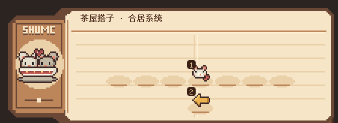
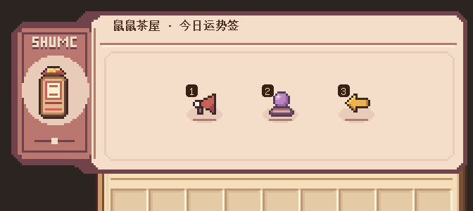
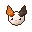
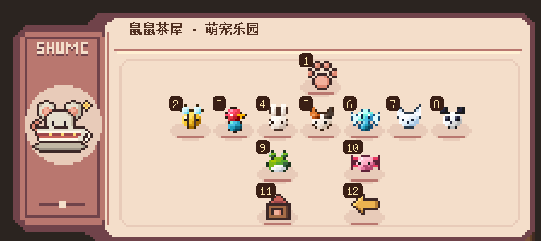
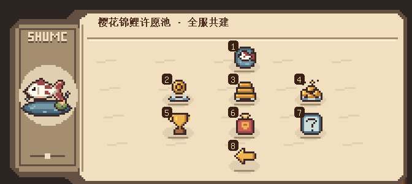
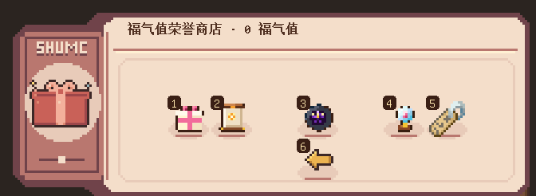
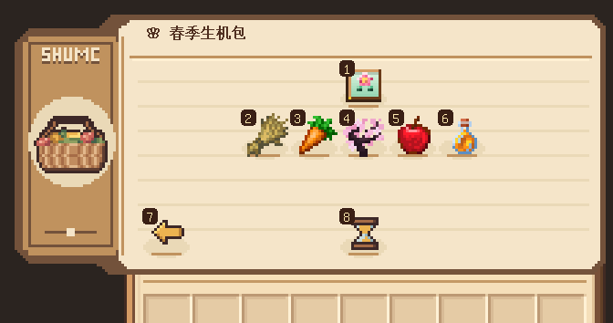
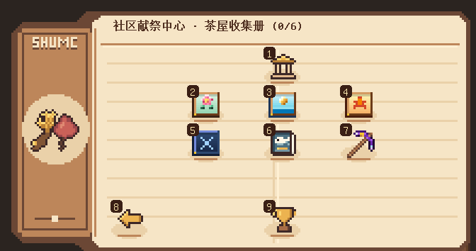
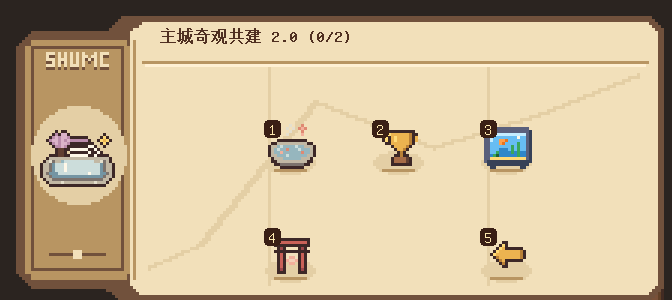

社交 · 萌宠 · 许愿池
和朋友一起玩：搭子合居、串门点赞、干杯、漂流瓶、骰子；萌宠；锦鲤许愿池与福气值；全服一起修的社区献祭和主城奇观
茶屋搭子 /partner
/partner（别名 /搭子、/合居）：和 2–4 位好友结成合居小队，共享家园。在一起（24 格内）就有加成：
- 同屏：幸运 I，种田挖矿有概率额外掉落；
- 一起钓鱼：25% 概率双方各得 8 币；
- 危急守护：快没血时回 2.5 颗心（60 秒冷却）；
- 默契升级：全员各得 等级 × 25 币；锻造坊工费 85 折。
- 在家一起过日子：和搭子一起坐在家具上歇息、品茶（桌面茶具 / 铁壶炭炉 / 守夜小茶炉）或用工坊站点时，24 格内有搭子就 默契值 +2（60 秒冷却）。见 家具联动玩法。
用法：/partner invite 好友名 邀请，对方点 [✔ 接受] 或 /partner accept（拒绝是 /partner deny）；/partner sethome 设共享家园、/partner home 回去；/partner leave 退出。搭子会自动共享你的庄园和店铺建造权限。


串门、留言与点赞
/visit（别名/做客、/拜访）：打开邻里家园榜，去好友家做客。在野外/sethome后你的家就会出现在榜上；/visit toggle开关迎客（菜单里的迎客开关在/shezhi个人设置）。/like玩家名（别名/点赞）：给好友的家点赞送花：双方各得 10 茶屋币 + 5 福气值。每天最多送 3 朵，同一位好友每天 1 次；对方要先在野外/sethome才能被点赞。/guestbook（别名/留言簿）：看自己家门口的便利贴；菜单里从邻里家园榜进；/guestbook 玩家名 留言给好友留言（每人最多保留 14 条），每天前 3 次留言各得 8 茶屋币。- 名片上的家具：邻里家园榜每张名片多了「家园内饰」一行，统计屋主和搭子在家附近 32 格内摆的茶屋家具、烹饪灶台、牧场加工机、洒水器和生态瓶件数，再挑几个亮点标签（茶席、工坊、收银专柜、星渊纪念……）。
- 到了门口也能互动：屋主门口的 🎏 鼠纹暖帘右键直接点赞送花，📮 鼠鼠迎客邮筒 / 📚 读书写字桌右键看留言簿并弹出 [👍 点赞送花] [✍ 写便利贴]；屋主只租了庄园、还没
/sethome也能送。详见 社交互动家具。
干杯、茶话会、漂流瓶与骰子
| 玩法 | 说明 |
|---|---|
干杯 /toast | 和 10 格内的好友举杯（邀约 20 秒有效），双方都拿幸运 + 速度 + 生命恢复，每天前 3 次各得 15 茶屋币（茶话会期间 30 币、增益更久） |
全服茶话会 /teaparty | 定时开启的全服活动（散场后约 5 小时再开一场，每场 5 分钟），期间干杯拿双倍茶屋币 |
漂流瓶 /bottle | 每天能捞 3 次陌生茶客写的纸条，喜欢就回赠一颗小心心（你得 10 币、写瓶子的人得 15 币）；/bottle send 内容 寄出一封（10 币） |
🎲 茶屋骰子 /dice | 茶桌掷骰拼手气；/dice duel 玩家 赌注 和好友赌 10–200 币比大小，对方 /dice accept 或 /dice deny |
 今日运势 今日运势 /fortune | 每天一支茶屋运势签，附带一项小加成，见下方；可以分享到公屏 |
今日运势签 /fortune
每天 0 点换新签，第一次 /fortune 或签到时自动抽一支，当天一直有效：
| 签 | 当天加成 |
|---|---|
| 🎣 垂钓大吉 | 钓到高星鱼和鱼王的概率小幅提升 |
| ⛏ 矿脉大吉 | 挖矿掉神秘晶洞的概率 +10% |
| 🍵 茶香大吉 | 工坊酿造烘焙升星概率 +20% |
| 💰 财运大吉 | /sell 出货总收益 +12% |
| 🌸 岁月静好 | 抽到时送 20 茶屋币 + 1 杯樱花乌龙冷萃 |


我的档案与全服排行榜
手账第一排的「📊 我的档案」（或 /profile）把你在茶屋的成绩放在一页：财富、专精、钓鱼（图鉴进度和最大的鱼）、星渊、环保分、邻里人气、签到天数，每一项旁边都写着你的全服名次（数据卡只看数据，不跳转）。点头像打开「我的称号」，页里还有 🏆 排行榜和 ⚙ 个人设置。
/paihang（或 /rank）是全服排行榜，一共七个榜：财富榜（按当前茶屋币余额，钱包里的「🏆 财富榜」也能打开）、专精、鱼王、星渊、环保、人气、签到。鼠标停在榜单上能看到前 10 名。榜单每 5 分钟更新一次，刚钓到的大鱼稍等一会儿就会上榜。
个人设置 /shezhi
/shezhi（或 /settings）一个菜单管好这些开关：
| 开关 | 作用 |
|---|---|
| 👘 衣橱 | 打开衣橱，统一管理光环、樱花飘落、星渊拖尾、武器皮肤和花环（见下） |
| 🏷 显示称号 | 隐藏或恢复你佩戴的称号（全服只有这里能隐藏；关了再打开会恢复原来的称号） |
| 🏡 家园迎客 | 关掉就是闭门谢客，别人暂时不能来串门 |
| 🚀 接受传送请求 | 不想被人拉来拉去时关掉 |
| 💬 接收私信 | 想安静种田时关掉 |
👘 衣橱（原「个人特效」页）
以前的「✨ 个人特效」页已经并进 👘 衣橱：在 /shezhi 点 👘 衣橱，或直接 /yichu。光环、樱花飘落、星渊拖尾、武器皮肤、🌸 花环都在这里穿戴，买过的不会丢；还没有的写着在哪买，点一下直接带你过去。各分页和来源见 衣橱与新道具。
萌宠光环带增益、跟着宠物走，不在衣橱里。拖尾也能用 /xy trail stardust|sakura|lantern|off 切换。
Tab 玩家列表与聊天头像
- 按 Tab 看在线玩家：页眉是茶屋欢迎语和在线人数，页脚写着玩家 QQ 群；每一行是「[ 称号 ] 专精小标签 名字」，右侧显示延迟（例如 39ms）。
- 聊天消息前会显示发言者的头像，称号用白色方括号「[ 称号 ]」。
- 加入了 🛡 公会或 🏘 小镇的人，称号前面还能显示【公会会标】或〔小镇名〕，用
/guild prefix或/town prefix选择。
萌宠乐园 /pet
/pet（别名 /宠物）：解锁后萌宠会一直跟着你，右键可以摸摸它，每只都有专属光环增益。

萌宠乐园里的 🎀 项圈与零食：每只萌宠一款项圈（400 币，永久），戴上后宠物身上会有一个 3D 小饰物、跟随时有一个小被动；喂零食能教它转圈、打滚、跳起来。详见 衣橱与新道具。
🐾 宠物照料
怎么操作：空手右键自己的宠物 = 打开宠物菜单；手拿食物右键 = 喂食；Shift+右键 = 坐下 / 跟随。也可以 /pet menu 打开菜单，/pet call 一键召回，/pet stow 收起。
- 不挡路：宠物不和人碰撞，不挤门、不卡楼梯；平时跟在你右后方，不挡视线。打怪时宠物挡在前面，这一下会打到它身后的怪；挖方块时它会立刻让开；箭、三叉戟会直接穿过宠物。你要开箱子、门、工作台时它挡着也会自己让开。
- 不吵：原版叫声全关，只在喂食、开菜单时给你轻叫一声；声音可以选 静音 / 少（默认）/ 正常。鹦鹉「学你说话」默认关，在菜单「声音」里右键打开。
- 菜单里能改：坐下 / 跟随、收起 / 召回（收起后光环和项圈被动暂停，下线也记得）、跟随距离 近 / 中 / 远、体型 小 / 正常、名牌显示、改名（最多 12 个字）、动作、项圈与零食。
💞 亲密度 1–10 级（每只宠物各算各的）：喂食 +10（每天前 10 次算），跟着你每分钟 +1（每天最多 90），最快约 7 天满级。
| 等级 | 解锁 |
|---|---|
| 3 级 | 🎁 每日小礼物（每人每天一份）：蜜蜂 蜂蜜瓶、鹦鹉 苹果、垂耳兔 胡萝卜、三花猫 生鳕鱼、悦灵 紫水晶碎片、狐狸 甜浆果、熊猫 竹子、雨蛙 睡莲、六角恐龙 热带鱼；6 级起数量变多，10 级起偶尔多一块宠物零食。背包要留空位 |
| 5 级 | 🎒 宠物小包 9 格（10 级 18 格），每只宠物一个，只有主人能打开 |
| 7 级 | 🌙 夜里 10 格内有怪物靠近，宠物会朝那边看，动作栏轻提示一次（菜单里可关） |
| 10 级 | 称号「💞 宠物知己」，在「我的称号」里戴 |
光环和项圈被动的效果没有变。


锦鲤许愿池 /pool
/pool（别名 /许愿池、/锦鲤池）：全服一起往池里投茶屋币，投满就随机开一场 30 分钟全服狂欢。
- 三档投币：100 币（自己得 15 分钟幸运 I）、500 币（池边放樱花烟花 + 送你 1 杯抹茶拿铁）、2000 币（樱花烟花 + 全服播报感谢，在线每人领 20 币红包）。每投 10 币得 1 福气值。
- 目标：按近 24 小时活跃人数自动调整（至少 3000 币），当天每满一次目标 +50%；单人每轮最多贡献 40%。
- 频率：两场狂欢至少隔 4 小时；池满但还在冷却时会「蓄满待开」，时间到自动开启。
- 每天签到也会自动帮你向池里注资。
| 狂欢（随机 1 种） | 效果 |
|---|---|
| 🎏 锦鲤暴走 | 钓鱼幸运 II，钓起鱼时 25% 额外掉福气值或小福袋 |
| 🌾 丰收时刻 | 现场收获成熟作物 30% 双倍掉落 + 茶屋币红包 |
| 🌸 星露夜茶会 | 全服樱花飘落，每 5 分钟在线领茶屋饮品或点心 |
福气值商店 /pool shop
福气值不能交易，靠投币、签到、献祭、试炼等攒。福气值 ≥100 时主城商店 9 折。


两副背饰每人可以先在 /yichu back 免费二选一领一副，这里换的是另一副，见 背饰。




社区献祭 /bundle
/bundle（别名 /献祭、/收集册）：全服一起交物资修复 6 个收集包，每修好一个，全服永久多一项特权。谁交都算进度，每次提交还送 2–20 福气值；包修好后交过物资的人每人领一份谢礼。
| 收集包 | 要交的物资（全服合计） | 全服特权 | 个人谢礼 |
|---|---|---|---|
 🌸 春季生机包 🌸 春季生机包 | 小麦 64、胡萝卜 64、樱花树苗 16、红苹果 16、蜂蜜瓶 8 | /sell 出货农作物与工坊美食 +20% | 150 币 + 樱花抹茶拿铁 ×2 |
| ☀ 夏季欢歌包 | 甜浆果 64、西瓜片 64、可可豆 32、海晶灯 8、荧石粉 32 | 工坊速度 +25%，槽位 3→4 | 180 币 + 金胡萝卜 ×8 |
| 🍁 秋季丰收包 | 南瓜 32、马铃薯 64、甜菜根 48、鸡蛋 32、熟牛肉 32 | 全服经验获取 +35%（6/6 全满升为 +50%） | 180 币 + 金苹果 |
| ❄ 冬季暖炉包 | 雪块 64、冰块 32、营火 8、灯笼 16、白色羊毛 32 | 解锁稀有家具兑换，签到额外 +30 币与暖冬姜蜜茶 | 200 币 + 暖黄小台灯 |
| 🎣 茶屋垂钓包 | 茶屋钓获的鲜活溪鳕 5、星露红鲑 5、黄金河豚 3、樱花锦鲤 2，任意 ★★ 银星以上的鱼 3 | 鱼类出货 +15%、幸运加持、解锁萌宠茶屋雨蛙 | 220 币 + 附魔之瓶 ×4 |
 ⛏ 矿洞星辉包 ⛏ 矿洞星辉包 | 铁锭 64、金锭 32、红石粉 64、钻石 8、紫水晶碎片 16 | 工坊槽位再 +1（最多 5）、稀有家具半价 | 260 币 + 附魔之瓶 ×8 + 金苹果 |
个人谢礼要等那个包修好后，给这个包交过物资的人才能各领一份，另送 50 福气值。6 个全修好后开启「复兴大满贯」：全服经验 +50%、解锁萌宠樱粉六角恐龙，累计交满 5 件的人还能领 500 茶屋币 + 祝尼魔毛绒玩偶。
新手也能帮上忙
春、秋两个包要的大多是种田就能得到的东西。每交一次都送 2–20 福气值，包修好还有谢礼，交几个小麦也算你一份。




主城奇观 /wonder
/wonder（别名 /奇观、/温泉）：全服一起捐建材修主城地标，每次捐献送 1–25 福气值，竣工时在线玩家各得 100 币，捐得最多的前 5 名刻上功德碑。竣工光环只在主城保护区内生效。
- ♨ 后山樱花露天温泉（樱花原木 256、深板岩圆石 256、营火 16、蜂蜜瓶 32）：主城内回血 + 饱和，附近酿造 +10% 速度。
- 🐠 主城锦鲤玻璃水族馆：主城幸运 I，全服钓鱼尺寸与鱼王率 +5%。

